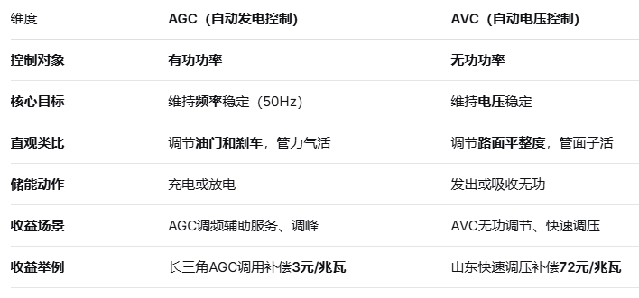
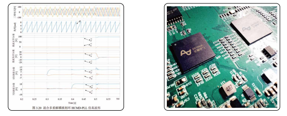
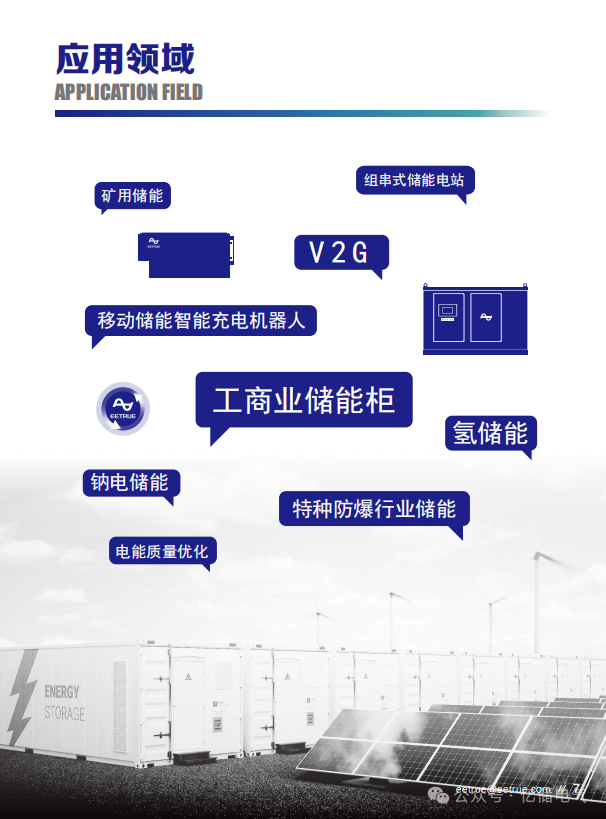

亿储电气，您身边的PCS专家\~
今天咱们来聊两个在储能圈子里越来越火，但很多人依然一头雾水的词儿——AGC和AVC。
对于很多刚接触储能行业的朋友来说，这两个缩写就像打哑谜。别担心，今天这篇文章保证给你把这块硬骨头啃下来。哪怕你没有任何工科基础，看完也能出去跟人吹牛，因为咱既要专业、通俗，还得逻辑通顺！
一、先打个比方：电网就像一条在高速上疾驰的超级跑车
想象一下，电网是一条不限速的高速公路，上面跑着无数辆用电的“车”。为了让所有车都能稳稳地跑，这条公路必须保持两个绝对的硬指标：
-
车速必须恒定在120km/h（相当于电网的频率，50Hz）；
-
路面的平整度必须极高，不能有坑坑洼洼（相当于电网的电压）。
这时候，风（风电）和光（光伏）这些天气多变的“司机”加入进来，一会儿猛踩油门，一会儿又突然松油，车速一下就乱套了，路面也颠簸起来。
为了稳住这条高速路，我们聪明的储能电站登场了。储能电站就像一个超级智能的“黄金右脚+路况修复机”。而指挥这个右脚怎么动的指令，就叫做AGC（自动发电控制）；指挥路况怎么修补的指令，就叫做AVC（自动电压控制）。
二、AGC：电网的“黄金右脚”——管的是“力气活”
AGC，全称自动发电控制。在储能电站中，它是实现储能“灵活调节、快速响应、安全并网”的核心控制系统。它的核心任务是管有功功率，也就是管电站发多少电、存多少电。
通俗理解，AGC就是电网调度中心给储能电站下达的“油门/刹车”指令。
它的工作原理很有意思，大家可以想象这样一个场景：
你在高速路上开车，想定速巡航在120km/h。如果车子因为上坡（相当于电网负荷加重）速度掉到了118km/h，你会本能地补一脚油门；如果下坡太快到了122km/h，你会稍微松油门甚至带一脚刹车。
电网运行也一样。一旦大家疯狂开空调导致发电量跟不上（频率掉到50Hz以下），调度中心的AGC系统就会立刻发现，并通过专用网络给储能电站下达指令：“别歇着了，快放电！”储能接到命令，瞬间释放出储存的电能，把频率拉回50Hz。反之，如果发电太多了，AGC就命令储能：“快充电，把多余的电吃掉。”
因为储能电站具备毫秒级的响应速度和充放电双向调节能力，AGC在储能上的应用远比传统火电灵活。在储能电站中，AGC系统通过“实时监测-智能决策-精准执行-闭环反馈”的闭环逻辑，实时采集调度中心的指令曲线和电池的SOC（剩余电量），并自动将充放电任务精准分配到每一个电池簇，确保实际出力与调度计划的偏差控制在极小范围内。
对于想靠储能赚钱的老板来说，AGC格外重要。在电力辅助服务市场里，提供AGC调频辅助服务是储能电站赚取收益的核心渠道之一。
例如，长三角地区的AGC调用补偿标准为3元/兆瓦，配合AGC基本补偿标准360元/兆瓦·月，这对于大型独立储能电站来说是一笔非常可观的收入。西北地区也明确对新能源配建储能的AGC系统提出了考核要求，配建储能需按月接受AGC考核，合格率越高、收益越稳。
三、AVC：电网的“路面整平师”——管的是“稳定活”
说完了管力气的AGC，我们再来看看管面子的AVC——自动电压控制。AVC的核心任务是管无功功率，维持电网电压的稳定。AVC的作用在于优化电网无功潮流分布，使电网趋于安全性和经济性最优的运行状态。
还是回到刚才高速路的例子：
AGC管车速，那路面的坑洼谁来管？如果路面一会儿凸起（电压太高），一会儿凹陷（电压太低），车子轻则颠簸，重则直接报废。
电网中的电压也是同理。家用电器对电压高度敏感——电压太高，烧电器；电压太低，电器不正常工作。而无功功率的过剩或不足就是导致电网电压波动的元凶。
传统上，调节电压和无功主要靠发电厂的励磁系统或专门的SVG装置。但如今，储能电站的储能变流器天生就具备强大的四象限运行能力，可以在发出有功功率的同时，灵活地发出或吸收无功功率。
当调度中心的AVC主站系统监测到某区域电压越限，就会立刻给储能电站下达指令：“给点无功，抬抬电压”或者“吃掉一些无功，把电压降下来”。储能电站通过协调控制所有PCS（储能变流器）的无功出力，就能精准调节并网点的电压。
AVC不仅是技术能力，也是并网的硬性合规要求，直接关系到电站的考核成本。以江苏省为例，储能电站如果不具备AVC功能，按照额定容量每月每万千瓦罚款1万元；AVC投运率不得低于98%，每低于1%还要每天每万千瓦追加考核12元。
好消息是，AVC服务同样能赚钱。在山东，独立储能电站提供快速调压响应，补偿标准为72元/兆瓦。在长三角，AVC的补偿标准为0.5元/兆瓦时，叠加上有偿无功调节的补偿，也能形成稳定的辅助收益。
四、AGC与AVC，到底有什么不同？
聊完了两位主角，我们来个“终极大对比”。其实区分AGC和AVC，记住这九个字就够了：

此外，传统控制中AGC和AVC常独立运行，容易引发“顾此失彼”——AGC调整有功时可能导致电压越限，AVC补偿无功时可能加剧频率波动。因此，现代储能电站正越来越多地采用AGC/AVC协同控制策略，通过统一的能量管理平台，将有功调节与无功调节联动，实现频率和电压的同步优化。
五、为什么这事儿对你很重要？
第一，有考核才有刚需。 根据国家层面的指导，新型储能应该具备AGC和AVC功能。如果不能达标，并网主体将面临实实在在的考核和罚款。例如，西北新版“两个细则”明确对未单独配置储能AGC系统的新能源配建储能设置考核条款；江苏省更是对AVC投运率和调节合格率都设定了严格的考核标准。
第二，这是储能赚钱的核心工具。 随着电力市场化改革深入，储能电站的收益越来越依赖辅助服务市场。无论是长三角还是山东、西北，各区域的“两个细则”都在不断细化AGC和AVC的补偿标准，让储能的服务价值加速变现。
第三，市场正在爆发式增长。 据国家能源局数据，截至2025年底，全国已建成投运新型储能装机规模达到1.36亿千瓦/3.51亿千瓦时，较2024年底增长84%，与“十三五”末相比增长超40倍。在如此巨大的增量市场中，AGC和AVC正是每一座储能电站参与电网调度、赚取服务收益的数字化“大脑”和“神经中枢”。
写在最后
聊了这么多，希望这篇文章能帮你彻底告别“睁眼瞎”的状态。
下次再跟同行聊天，提到AGC，你就在脑子里调取频率和油门的关键词，管的是有功功率，赚的是调频的钱。提到AVC，你就想到电压和路面平整度，管的是无功功率，既是硬性考核，也能赚取无功服务的钱。
产品推荐

稳定
1.采用第三代DSP+FPGA双核架构，运行主频和指令速度提升显著；
2.采用混合多重解耦HCMD锁相环PLL算法，有效提取电网基波分量的电压和频率，能够及时响应电网电压扰动，提高并网稳定性和鲁棒性；
3.采用分层结构设计，发热源和控制系统分层，提高系统散热性能、寿命和稳定性、IP65级防尘防水。

安全
1.采用光纤驱动技术，光信号代替电信号，控制信号和驱动信号光电高压隔离，控制系统更稳定、安全；
2.高效热管理，可选配智能风冷或液冷散热。智能风冷采用热管及冷媒散热技术，液冷为自研流道设计，高效热传递，提高功率器件散热效率。满功率输出，保障营收效益。

可扩展
1.可扩展多级模式，根据应用场景配置合适的DC/DC和PCS模块，实现多路直流源和交流源共直流母线储能系统可靠运行；
2.高、低压及功率可扩展，功能系统模块化设计，快速响应不同电压等级及功率等级的定制化
需求；支持并联工作模式；可扩展多种通讯和控制接口，支持第三方外部EMS设备。

易维护
1.模块化系统结构设计，核心模块独立装配，用户终端分钟级拆卸维修，适合工商业储充运维
场景，维护成本低;器件选型充分考虑耐久性和寿命，摒弃低成本模式，采用IGBT模块组、薄膜
电容、叠层母排等高功率性能优秀的长寿命器件；
2.故障数据云端共享，技术服务7*12小时在线。


对产品感兴趣可联系王经理：18701575571 （微同）
相关阅读：